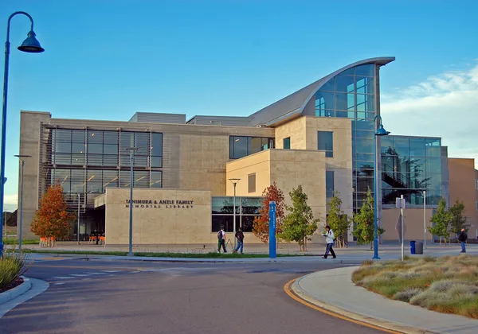

STANFORD
STANFORD史丹佛大學
- 全球排名平均前五名（根據 US News 世界大學排名）。
- 擁有 58 名諾貝爾獎得主、創辦 Google、Yahoo、Nike 等全球知名企業。
史丹佛大學坐落於美國加州矽谷的核心，是世界領先的私立研究型大學，以創新和卓越聞名全球。其校友創建的公司總經濟規模媲美世界第十大經濟體，具備極高的學術聲譽和產業影響力，是企業家和創新者的搖籃。
制勝 AI 時代｜2027 第 9 期
8 個月，取得史丹佛、柏克萊、加州州立大學三校結業證書，累積國際學術經歷
只需 8 個月，看懂 AI 如何改變你的產業，重塑企業體質，為你的公司注入全球創新基因
同時你還可以...一次擁有美國3大名校的國際證書
 STANFORD
STANFORD史丹佛大學坐落於美國加州矽谷的核心，是世界領先的私立研究型大學，以創新和卓越聞名全球。其校友創建的公司總經濟規模媲美世界第十大經濟體，具備極高的學術聲譽和產業影響力，是企業家和創新者的搖籃。
 BERKELEY
BERKELEY加州大學柏克萊分校是知名的公立研究型大學，並產生過 72 名諾貝爾獎得主。它是創新和科學發展的先驅，並以其在環境科學、電腦科學、人工智慧等領域的突破性研究而享譽國際。

CSU加州州立大學是美國最大的公立大學系統之一，提供超過 1,800 種課程，涵蓋 240 多個專業領域。學校與全球 100 多個國家合作，致力於多元化和全球化的教育模式。本計畫由蒙特雷灣分校（CSU Monterey Bay）授課。
本計畫由美國矽谷研究院（SVRI）承辦，與三校合作開設研究中心專案，邀請矽谷大型科技企業高層授課，並舉辦全球學術論壇。
Join our PROGRAM
進入 AI 時代，產業規則與競爭方式正在被改寫。
AI 已經不是科技公司的專利，而是每一家企業都要面對的經營課題。以下四項來自國際權威機構的研究，說明了這股趨勢的速度與規模：
麥肯錫 2025 年全球調查：88% 的受訪者表示，所屬企業已在至少一個業務功能中常態使用 AI，前一年為 78%；但只有約三分之一開始規模化推動，僅 7% 表示 AI 已在全公司全面規模化。
史丹佛大學最新一期《AI Index》報告：2025 年全球企業 AI 投資成長超過一倍；生成式 AI 在三年內達到 53% 的人口普及率，比個人電腦與網際網路的普及速度更快。
世界經濟論壇《2025 未來就業報告》：86% 的雇主預期，AI 與資訊處理技術將在 2030 年前改變自家業務；同一期間，勞動者既有技能中約有 39% 將被改變或過時。
國際貨幣基金（IMF）2024 年研究：全球近 40% 的就業受到 AI 影響，先進經濟體約 60%。Gartner 預測：到 2028 年，至少 15% 的日常工作決策將由代理式 AI 自主完成（2024 年為 0%）。
企業高管若能看懂 AI 帶來的產業變化，強化全球戰略思維與數據決策能力，無疑將在競爭中取得優勢。在這樣的背景下，美國名校的訪問研究專案不僅提供國際視野與高階學術訓練，更能讓企業主直接與三校學者交流，掌握最新的管理理論與數據驅動決策模式，為企業在 AI 時代的升級轉型奠定基礎。

很高興在這個網頁見到你！
這表示你已經正在為自己的人生或事業找尋新的契機...
我用最快速、簡單的方式讓你認識我...
從 18 歲台北補教界名師，到國際教育型企業家
台北北京深圳東京新加坡吉隆坡金邊雅加達曼谷加州賓州劍橋
AI 正快速改變各行各業的競爭規則，企業主必須快速應變。領導者若缺乏前瞻視野，看不懂 AI 帶來的變化，將難以駕馭未來趨勢。走出台灣、直接接觸美國學界與矽谷企業，是你最快補上這段落差的方式。
你需要的，是能直接用回公司決策的國際視野。

AI 正從科技業擴散到各行各業，企業的獲利模式與競爭規則都在改寫！這是了解 AI 時代商業環境、拓展全球視野的黃金機會，親臨美國矽谷，一週掌握未來趨勢！
美國正全力推進 AI 與製造業的雙重創新，矽谷是全球創新的中心，走進矽谷科技企業，掌握最前沿的商業與技術戰略，助力企業邁向全球！
AI 帶來效率，也帶來資料隱私、法規與企業風險的新課題！透過名校課程，與專研 AI 與法律的史丹佛教授交流，提前看懂規則、搶佔先機。企業家如何在創新與風險之間，找到最適合自己企業的平衡？
AI 時代，如何在全球市場中找到您的企業定位？與美國頂級名校教授面對面，用最先進的管理理論升級您的領導力。當 AI 進入每一個部門，企業家如何帶領團隊與 AI 協作，找到最適合自己企業的轉型模式？
在 AI 快速演進的環境中，掌握第一手資訊與人脈，是企業成功的關鍵。鏈接矽谷科技企業高層、名校教授與國際企業家，打造屬於您的國際商業合作網絡，從這裡邁向未來，成為 AI 時代的企業領軍者！
一週的美國名校學習，不僅是知識的進階，更是個人品牌的跨越式升級！成為國際化領袖，展示企業家的全球視野。從課堂到矽谷企業考察，全方位提升您的管理力、創新力與全球影響力！
選配赴美的你，將在 1 週內完成紮實、有系統的校園進修
網路直播班學員可選配赴美。實體校園班與結業典禮每年 10 月底舉行，行程安排與費用另計。另有「史丹佛 4 天 3 夜學術課程與矽谷創新之旅」，需另外報名。
歡迎晚宴、頂級企業家與學者破冰交流、行前說明會：計畫導師介紹、學習目標設定、學員商務交流
史丹佛大學開課典禮、高階領導力課程、產業前沿學術研究、AI 與未來商業模式等課程、矽谷企業家交流
國際戰略與政策研究、國際科技與投資研究、矽谷高層企業家私享晚宴、創新與創業對談
Union City 市政廳訪問、美國政府與企業政策解析、全球頂級學術環境與文化體驗、數位行銷組織領導力
Apple Park、NVIDIA、Google、電腦歷史博物館，深入參訪、交流矽谷科技創新發展歷程
矽谷研究院全球學術論壇、領導力總結與未來戰略規劃、訪問研究專題發表會、企業未來戰略圓桌會議
全球市場與企業國際化戰略論壇｜舊金山金融區、舊金山文化旅遊探索、返回機場｜賦歸
美國三校聯合課程與矽谷研究院、矽谷企業合作研究專案，歷屆曾帶領企業家學員到 Apple 學習科技與設計的融合、到 NVIDIA 了解 AI 運算、到 Google 探討人工智慧與未來工作模式...等客製化企業參訪交流，有別於坊間旅遊團的走馬看花，深度了解矽谷科技創新發展歷程，並為自己的企業注入新的領導量能與未來戰略規劃
矽谷擁有全球最具影響力的科技公司與創新企業，涵蓋人工智慧、半導體、雲端運算、社群媒體、自動駕駛、醫療科技等多個領域，讓你在現場直接向這些企業學習。


讓 史丹佛大學 · 柏克萊加州大學 · 加州州立大學 · 美國矽谷知名企業
嚴選名師群當你的企業顧問
公司導入 AI 之後，你的決策需要新的判斷框架——由三校教授與矽谷業師，直接看你的企業問題。
2027 第 9 期 8 位授課師資（三校各 2 位教授＋2 位矽谷科技企業高層；以校方公告為準）

CSU Monterey Bay
美國矽谷研究院院長兼董事長；曾擔任美國三所大學校長

Stanford & UC Berkeley
全球 20 億美元創投 Pegasus 合夥人，專注 AI、量子計算等深度科技投資；曾帶領 2 家公司上市
CSU Monterey Bay
美國矽谷研究院講者，專長新創融資與公司治理
矽谷 IBM
美國矽谷研究院顧問暨講者，專長新興科技與科技創投

Stanford
講授「設計思維」
矽谷科技公司高層
12 年商學院教學經驗，曾任西門子高層；美國矽谷研究院顧問暨董事

Stanford
專研 AI 與法律；OnRisk, Inc. 共同創辦人兼 COO

UC Berkeley
總體經濟學家，榮獲柏克萊傑出教學獎；美國經濟協會委員會成員
依照你的經歷與目標，選擇最適合你的進修計畫
進修時程 8 個月
進修時程 7 天
Frequently Asked Questions
你有其他問題嗎？
來電預約一對一諮詢，顧問會逐一為你說明。
AI 是本計畫的研究主軸之一。研究專題可以聚焦在 AI 在企業管理中的應用與數據驅動決策；師資包括專注 AI 與深度科技投資的 Bill Reichert、專研 AI 與法律的 John Kelley，以及主講「全球新興技術」的 IBM 高層 Dr. Ling Zong；選配的赴美行程，歷屆曾安排參訪 NVIDIA、Google 等科技企業。專題聚焦在經營決策與組織應用，不需要寫程式。
MBA、EMBA、DBA 偏向系統性的管理課程，重視學科知識學習；本計畫則以訪問研究的形式進行，更重視「學術＋產業實踐」。彈性、有效率，8 個月即可取得三校結業證書與國際學術經歷，與你既有的進修經歷相輔相成。
企業主與高階人士選擇進修，最關鍵的價值在於：提升企業品牌形象，為企業打造國際公信力；與全球企業家與學者交流，獲取產業趨勢與頂級人脈；專題研究可直接應用於企業發展，幫助企業轉型升級。這不僅是一張證書，更是進入矽谷與歐美企業核心圈層的通行證！
此計畫專為企業主、高管、創業家、專業人士打造，沒有硬性學術背景要求！重點在於實戰導向，研究課題可直接與企業運營結合，矽谷教授與商業導師將協助學員從商業視角出發，陪伴你完成研究。
可以！本計畫提供專業教授，幫助學員選擇與自身產業相關的研究主題，例如：AI 在企業管理中的應用、數據驅動決策模式、企業國際化策略，每位學員可以在學習期間預約教授一對一指導，確保研究內容具備學術價值與商業應用性。
結業後取得史丹佛、柏克萊、加州州立大學三校結業證書，課程由三校教授親自授課與指導，具有國際學術公信力；你也可以將證書拿去公證（海牙或使館）。
費用包含：
美國三校聯合課程與國內外協會合作，提供「創新企業與卓越人才獎學金」，可折抵部分費用，11 月底前送件適用；細節由顧問一對一說明。
請依序預約時間與教授團隊諮詢，步驟如下：
立即預約諮詢，在 AI 時代與世界級領袖同行！
2027 第 9 期3 月開學・滿 12 人即開班
立即預約一對一諮詢